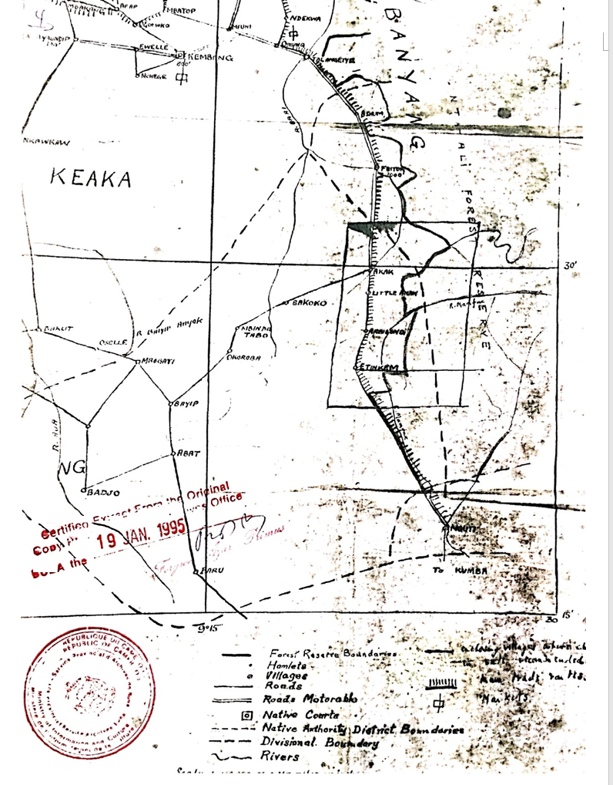
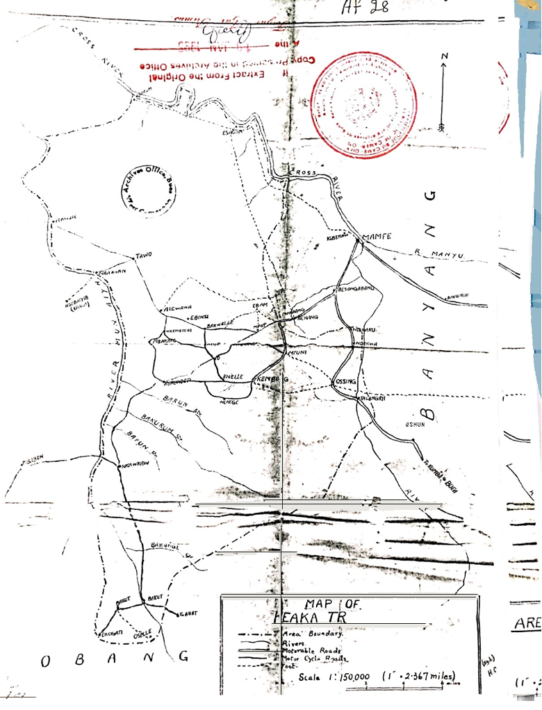

One cannot talk about Kembong Village without first establishing its fundamental roots in history. The historical origin leads us to our Eponymous ancestor by the name of Nchemti. He is referred to as the Eponymous Ancestor because nobody knows his origin. According to page 7, paragraph 27 of The Assessment Report of 1922 on the Keaka Speaking Area in Mamfe Division of the Cameroon Province, it is clearly stated that:
"The original home of Nchemti was at NYENYA quarter of Kembong, and 15 quarters were settled around him."
He had several sons and grandsons who later created villages which constitute d the Nchemti Clan. There were:
From records kembong is not the original name of the area where NCHEMTI SETTLED with his children before some migrated to found villages mentioned above. From Dr.ALFRED MANSFELD book URWALD DOKUMENTE published in 1908 it is clearly stated that forty years ago this village was called fontem and was administered by chief abandep. He stated that the name kembong means a fools place because Atakem the son of chief Abandep was a fool wandering restlessly around the area and they decided to name the place where the fool lives or fools place. see extract below in German and translated into English.
10. Kembong = Fools place. Mbung = fool. Forty years ago this village was called Fontem and was administered by Chief Abandep. His son Atakam left and wandered restlessly for months, so he was called: a fool = mbung, and so the place he finally chose was called “Fool’s Place“.
10. Kembong=^ Narrenplatz. Mbung ^ Narr. Vor vierzig Jahren hieß das Dorf Fontem und wurde vom Häuptling Abandep verwaltet. Sein Sohn Atakam wanderte aus und zog monatelang unruhig umher, daher nannte man ihn: einen Narfen = mbung, und der Platz, den er sich schließlich wählte, hieß Narrenplatz
The assessment report of 1922 on the keaka speaking area in mamfe division of the cameroon province, present the Nchemti clan as follows:
In page 2 Paragraph 3 of 1922 assessment report the NCHEMTI CLAN comprised the villages of:
In page 4 paragraphs 12 say, (external pressure is known from tradition to have been effected as far as 1815 when continual warfare was waged between the Nchemti clan, and all Situated in and around Kembong).
Hence we realised that prior to the great migration all the villages constituting the clan settle in the area called nfor etem which was later named kembong due to the fool atakem whom the Germans named the place anew after meeting him were all settled in the same location.
The great migration of the Nchemti clan started in 1835 when one of Nfontem son EKAWKAWBE founded ndekai and his decendant of Ekawbatu further moved to found Mbinjong Village. Nfontem other son OBEN MBOT founded NKAWKAW (nkogho village), EWUMBA son of Nchemti founded IGBEKAW of Ossing village, EKOMBA another son of Nchemti founded EREK TALANGAYI and ELAMBI son of Nchemti!S son TAINYI ASU founded Oselle. This is confirm by the original text of the assessment report of 1922
In page 7 paragraphs 27 Says
(The first emigration took place about 1835 when some of the clan settled at Ndekwa. This followed a generation later about 1860 by more settlers going to Mbinjong. Shortly before the KEBU war (circa1870) one of of Mfontems sons, a hunter discovered a fertile piece of land near Mon-Ayai River and with his father’s consent established the village of Nkawkaw there. During the kebu war the Okawgk o Quarter of kembong was burnt by the kebus, and Tainyi Ase the quarter head, took his people and settled at OSELLE.
The 16 founding quarters that make up kembong village were the remaining children and grand children of Nchemti that did not migrate to form new villages but settle around their father as indicated in the 1922 assessment report in its page 7 paragraph 27 under the sub heading THE NCHEMTI CLAN states the number of quarters that made up kembong village;
(The original home of Nchemti was at NYENYA quarter of kembong, and 15 quarters were settled around him).
Therefore, from the above paragraph we confirm clearly that kembong is made up of 16 original founding quarters and the land mass of each is included in the administrative territory called kembong village.
When the German finally occupied the area and established them station at Abokum village site which they named Ossidinge or Oschi-dinge means "fish place”; Oschi = "fish", dinge = "many". The name was applied by the natives only to a place on the bank of the Cross River; a settlement with this name has never existed.
The Ossidinge district extends approximately from 5" 15’ to 6• 15’ northern latitude and 8" 50’ to 9" 50' eastern longitude. lt is limited to the west by the Cameroon-Nigerla land border, on the south by the districts of Rio del Rey and Johann Albrechtshöhe, in the east by the districts of Dschang and Bamenda, in the north by an area that has not yet been administered [by the colonial forces] for the most part.’ The district Is divided Into seven regions : Ekol, KeaLa, Banyang, Obang, Bakogo (Balundu), Anyang, Boki.
The Germans after establishing their base embarked on a resettlement scheme of the villages of the area following the historical origin of the respective villages. The intention of this scheme was to ease the administration of the people since the respective villages were scatter in their ancient sites, they decided to regroup them following their genealogical origins.
kembong village is the largest village In size and population found In the keaka tribe within eyumojock sub division and which is situated in the west central part of Manyu Division. Prior to the advent of the German colonial administrat ion In the area, the 16 founding quarters of kembong village that did not migrate from their ancient site within existed autonomously as independent villages. Each of the 16 founding quarters had a distinctive name which either was the name of the founding ancestor or a description of a particular aspect of the land. The word ASSESENGEH (meaning land own by XYZ) was used as a suffix before each name: assesengeh ndengane, assesengeh Tapkang, Mbiofong, Nkonghobe, Ebarensi, Okune, Nchiofang, Okem, Neseron, Okem-Nsemeba, Aboh Tabe, Okangku, Ayukaba, Okoyeneng, Nyenya and Nyane.
As indicate by Dr. ALFRED MANSFELD the entire area was called AFOR-ETEM meaning Land Owners which he spelled as NFONTEM. However this name was changed by the Germans to kembong because they were describing the area by making allusion to a fool called Atakem who restlessly roamed the area. This Atakem was the son of chief ABENDEP of Nseron quarter as indicated in his book URWALD DOKUMENTE published in 1908. This is how the inhabitants of 16 founding quarters which was brought together to form kembong vllage were forcefully moved to the present location in a linear settlement pattern while maintaining their old villages as their respective farm lands till this present day. Its important to note that the area where the population which were moved to settle in the new location was the land space of Ebarensi, Okem, Okem- Ngemeba and Nyane Quarters. Evident to this fact is the existence of their farming lands around the present location of the linear settlement.
It is worth to note further that kembong village is made up of the entire land masses of the 16 founding quarters that were brought together. The village is bounder in the North by Mfuni, OgomokO ä FId Mbatop, in the East by Ossing, Talangaye, in the West by Ewelle and Njeke and in the South by Nkogho, Bakut, Okoroba, Osselle and Bakogo. The present kembong territory measures about 24 miles from northern limit assesengeh okonyengeh at agbor-aya with Mfuni and Mbatap to the southern limit asseseng eh okangku and ndengane with Bakut, Bakogo and Osselle. Meanwhile the greatest breadth east to west is about 10miles from Assesngeh Mbiofong to Assesengeh Okune. The area has streams in the hinterlands but no streams in the linear settlement area. The entire area is forest zone with red clay and laterite soil. It covers the central basalt plain which is very fertile and fairly fertile soil In the south.
